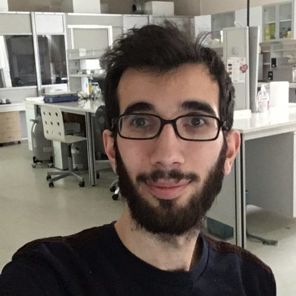

PhD Candidate · Bioengineering Program

I am a PhD Candidate in the Bioengineering Program at Hacettepe University, Ankara, supervised by Assoc. Prof. Dr. Îsmail UYANIK. My research investigates the neural and behavioral mechanisms of active sensing in weakly electric fish using closed-loop experimental paradigms, computational modeling, and system identification.
I am broadly interested in multisensory integration, motor control, and bioinspired robotics — understanding how animals dynamically adapt their sensing strategies under varying environmental constraints, and translating these insights into engineering principles.
My doctoral research is supported by the TÜBÎTAK 2211-A National PhD Scholarship Program. I have presented at SFN Neuroscience, FENS Forum, and SICB in Washington D.C., Chicago, San Diego, Vienna, and Paris. Feel free to reach out for collaborations or to discuss research.
Upcoming: PhD Defense! 🎓
Upcoming: Attending a workshop in Wageningen, Netherlands. 🇳🇱
Prepared a technical paper comparing IIR and FIR filtering for biological signal decomposition for the 34th SIU Conference.
Paper published in Journal of Experimental Biology: Flow impairs multisensory tracking and increases active sensing in weakly electric fish. 🔗
Attended a training academy in Copenhagen and Roskilde, Denmark. 🇩🇰
Presented poster at SFN Neuroscience 2025, San Diego, CA — Adaptation of Active Sensing Responses to Sensory Manipulations in Weakly Electric Fish. 🧠
Paper published in Bioinspiration & Biomimetics: Predictive Uncertainty in State-Estimation Drives Active Sensing in Weakly Electric Fish.
Completed METEOR — EU-funded training on interdisciplinary collaboration and career development for early-stage researchers. 🇪🇺
Presented at SFN Neuroscience 2024, Chicago, IL — A fish-in-the-loop comparison of various active sensing models.
Presented at FENS Forum 2024, Vienna, Austria — A Fish-in-the-loop System to Study the Underlying Mechanisms of Active Sensing.
Flow impairs multisensory tracking and increases active sensing in weakly electric fish
Journal of Experimental Biology, 2025
Predictive Uncertainty in State-Estimation Drives Active Sensing in Weakly Electric Fish
Bioinspiration & Biomimetics, 20, 016018, 2025
The co-use of stromal vascular fraction and bone marrow concentrate for tendon healing
Current Stem Cell Research & Therapy, 18(8), 1150–1159, 2023
Fabrication of a multi-layered decellularized amniotic membranes as tissue engineering constructs
Tissue and Cell, 74, 101693, 2022
Bedensel engelli yüzücülerde çıkış süresinin gövde esnekliği, aerobik endurans ve anaerobik güç ile ilişkisi
Journal of Exercise Therapy and Rehabilitation, 7(2), 186–192, 2020
A Case Study as a Multisensory Integration Model: Weakly Electric Fish
Use of Zebrafish as a Model Organism (Ed. Dinçer PR) · Türkiye Klinikleri, pp. 104–9, 2023
Reshaping Active Sensing via Closing a Feedback Loop Around Free Behavior
32nd IEEE Signal Processing and Communications Applications Conference (SIU), 2024
Tracking the Nodal Point of Weakly Electric Fish Using Artificial Neural Networks
31st IEEE Signal Processing and Communications Applications Conference (SIU), 2023
System Identification of the Target Tracking Behavior of Zebrafish During Rheotaxis
30th IEEE Signal Processing and Communications Applications Conference (SIU), 2022